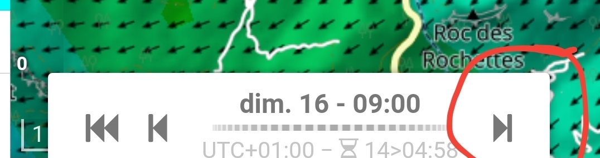
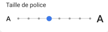

Risoluzione dei problemi e Issues
Previsioni e Problemi di Dati
Sono un abbonato, ma posso vedere solo le previsioni per un giorno.
È probabile che non sia collegato come abbonato.
Per verificare, fare clic sull'icona delle impostazioni in alto a destra della pagina per aprire il menu. Guardare in fondo al menu: è visualizzata la tua email?
- Se no, fare clic su "Login" (terza riga dal basso) e inserire email e password.
- Se sì, provare ad aggiornare la pagina.
Se il problema persiste dopo questi passaggi, si prega di contattarci per segnalarlo. Potrebbe trattarsi di un problema temporaneo del sito, e faremo del nostro meglio per risolverlo il più rapidamente possibile!
Perché posso vedere solo le previsioni per due o tre giorni?
L'ora esatta in cui vengono pubblicate le previsioni può variare a seconda delle condizioni meteorologiche del giorno. Condizioni più difficili significano un tempo di calcolo più lungo.
Se si vedono solo due o tre giorni di previsioni, è probabile che l'ultimo calcolo stia richiedendo più tempo del solito. Questo può accadere quando il volume di dati è più grande, ad esempio in caso di forte vento. In tal caso, il giorno successivo è ancora in fase di elaborazione e dovrebbe apparire molto presto.
Se ciò accade, provare a ricontrollare tra un'ora.
Posso accedere ai dati passati di alcuni giorni (o settimane) fa?
Purtroppo, questo non è possibile. I dati meteorologici sono estremamente grandi, e conservarli a lungo termine richiederebbe una quantità enorme di risorse. Ecco perché sono disponibili solo previsioni e i dati del giorno corrente.
Al momento, non abbiamo la possibilità di fornire dati passati. Ci scusiamo per la limitazione!
Potete aggiungere previsioni per La Réunion o un altro luogo?
Stiamo lavorando per migliorare la copertura.
Dati dello Spazio Aereo
Ho trovato un errore nei dati dello spazio aereo.
Se hai notato un errore nei dati dello spazio aereo, ti preghiamo di segnalarlo direttamente a OpenAIP.
Una volta effettuata la correzione sulla loro piattaforma, verrà automaticamente aggiornata sul nostro sito entro pochi giorni. Grazie per la tua attenzione!
Punti di Volo
Potete aggiungere o rimuovere un sito di decollo/atterraggio?
I siti di decollo e atterraggio in Meteo-Parapente provengono dal database di Paragliding Earth.
Se si desidera aggiungere un nuovo sito, è sufficiente registrarlo su Paragliding Earth. Verrà automaticamente integrato nel prossimo aggiornamento principale di Meteo-Parapente.
L'altitudine del mio sito di decollo non corrisponde alla sua altitudine reale sul vostro sito.
Questo è completamente normale. I modelli meteorologici funzionano per interpolazione e utilizzano una griglia con pixel larghi alcuni chilometri. L'altitudine visualizzata è una media calcolata su quell'area, che può comportare una discrepanza tra l'altitudine visualizzata e quella effettiva—tranne in terreni pianeggianti.
Questo è il modo in cui funzionano tutti i modelli meteorologici, che siano i nostri, Météo-France, DWD, NOAA o altri. Questa approssimazione non può essere evitata perché i calcoli sarebbero troppo complessi. 😊
Preferiti e Personalizzazione
Posso accedere ai miei preferiti su tutti i miei dispositivi?
Questa funzione sarà disponibile nelle versioni future del sito web e dell'app.
Per ora, i preferiti sono memorizzati solo localmente sul proprio dispositivo. Questo significa che se si cambia dispositivo o browser, i preferiti salvati non saranno disponibili. Riconosciamo questa limitazione e stiamo lavorando per migliorarla presto! 😊
I miei siti preferiti sono scomparsi. Perché?
I preferiti possono scomparire nei seguenti casi:
- Cancellazione dei dati del browser – Se si eliminano i cookie del browser o l'HTML5 Local Storage, i preferiti salvati andranno persi.
- Spazio di archiviazione limitato – Se il dispositivo ha poco spazio di archiviazione, il sistema potrebbe liberare automaticamente spazio eliminando dati non essenziali, compresi i preferiti.
- Software per la privacy o antivirus – Alcuni programmi antivirus o strumenti per la privacy potrebbero rimuovere i dati memorizzati come parte della pulizia del sistema.
Se possibile, controllare le impostazioni del browser o del sistema per prevenire l'eliminazione automatica in futuro. 😊
Problemi dell'Applicazione
Dopo un aggiornamento software, la mia app non funziona più.
Se si verificano problemi dopo l'aggiornamento dell'app, si consiglia di disinstallare e reinstallare l'app dal proprio store (App Store o Google Play). Questo spesso risolve eventuali conflitti causati dall'aggiornamento.
Se il problema persiste, si prega di contattarci fornendo:
- Il modello del dispositivo
- La versione del sistema operativo
- Uno screenshot del problema (se possibile)
Faremo del nostro meglio per aiutarti rapidamente! 😊
La mia app non funziona più sul mio nuovo iPhone.
Ci dispiace molto per questo disagio. Purtroppo, un problema di compatibilità con l'ultima versione iOS sta impedendo al nostro app di funzionare correttamente.
Per ripristinare la compatibilità, dobbiamo apportare modifiche significative al codice dell'app, che non era inizialmente previsto nella nostra programmazione.
Stiamo attualmente lavorando per risolverlo!
La buona notizia è che è ancora possibile accedere al 100% delle funzionalità senza utilizzare l'app! Basta aprire il browser mobile e visitare www.meteo-parapente.com.
Ancora una volta, ci scusiamo sinceramente per l'inconveniente e apprezziamo la vostra pazienza e comprensione! 😊
Non vedo la mappa di sfondo nella mia app.
Potrebbe essere perché la versione Android è obsoleta e fa parte del 2% delle versioni più vecchie ancora in uso. A causa dei requisiti di Google, abbiamo dovuto aggiornare la tecnologia utilizzata nell'app per garantire la compatibilità con le versioni Android più recenti. Purtroppo, questo aggiornamento non è compatibile con le versioni più vecchie, come la vostra.
Al momento, non abbiamo trovato una soluzione che consenta alla nuova app di funzionare correttamente su queste versioni più vecchie. Comprendiamo che questo può essere frustrante e ci scusiamo sinceramente.
Mentre lavoriamo per risolvere questo problema, consigliamo di utilizzare la versione mobile del nostro sito web. Offre le stesse funzionalità dell'app e vi permetterà di continuare a usufruire dei nostri servizi senza limitazioni.
Altri Problemi Tecnici
Mancano una o alcune frecce temporali in basso sullo schermo nella mia app.

Questo problema è probabilmente correlato alle impostazioni delle dimensioni del carattere o di accessibilità sul dispositivo Android. In breve, il dispositivo sta "ingrandendo" troppo, lasciando poco spazio perché tutte le frecce si adattino sullo schermo. Ridurre la dimensione del carattere dovrebbe risolvere il problema.
Ecco le impostazioni consigliate per prevenire questo problema:

Sono dell'Australia e non riesco a connettermi al sito web o all'applicazione.
Alcuni utenti australiani hanno recentemente riscontrato problemi di connessione con il nostro sito web e l'applicazione. Sembra essere correlato ad alcuni provider internet australiani.
Mentre continuiamo a indagare sul problema, è possibile accedere al nostro sito web utilizzando qualsiasi servizio VPN con un indirizzo IP esterno all'Australia. Se l'uso di una VPN non è un'opzione, si prega di contattarci per un rimborso.
Stiamo attualmente indagando su questo problema
Ho trovato un bug sul sito.
Un grande grazie per aver dedicato del tempo a segnalare i bug! Il vostro feedback è prezioso e ci aiuta a migliorare continuamente il servizio.
Per aiutarci ad analizzare e risolvere il problema il più rapidamente possibile, si prega di contattarci fornendo:
- Uno screenshot
- Una breve descrizione del bug (cosa si stava facendo quando si è verificato il problema, eventuali messaggi di errore, ecc.)
Faremo del nostro meglio per risolverlo rapidamente. Grazie ancora per il vostro aiuto! 😊